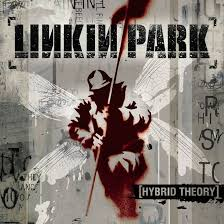

| Nome | Capa | Descrição | Link |
|---|---|---|---|
| From Zero | From Zero é o oitavo álbum de estúdio da banda americana de rock Linkin Park. Foi lançado em 15 de novembro de 2024 pelas gravadoras Warner Records e Machine Shop Recordings. É o primeiro álbum do Linkin Park desde One More Light (2017) e o primeiro a contar com a vocalista Emily Armstrong nos vocais, assim como o baterista Colin Brittain, após a morte de Chester Bennington em 2017 e a saída do baterista e membro fundador Rob Bourdon. O título do álbum tem um duplo significado; é uma referência ao nome original da banda, Xero, e também ao novo capítulo do grupo com Armstrong e Brittain | spotify | |
| Hybrid Theory |  | Lançado em 24 de outubro de 2000, Hybrid Theory é o álbum de estreia da banda Linkin Park e um marco na história do rock e do nu-metal. Combinando elementos de rap, rock, e música eletrônica, o álbum trouxe uma sonoridade inovadora que cativou milhões de fãs ao redor do mundo e consolidou a banda como uma das mais influentes de sua época. | spotify |
| Meteora | Lançado em 25 de março de 2003, Meteora é o segundo álbum de estúdio do Linkin Park e uma obra-prima que solidificou o legado da banda no cenário musical global. Após o estrondoso sucesso de Hybrid Theory, o grupo retornou com uma sonoridade mais refinada, letras ainda mais profundas e uma produção impecável, mostrando que não eram apenas uma moda passageira. | spotify |